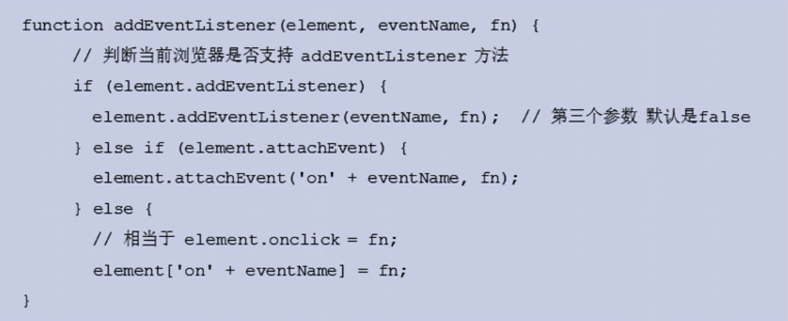
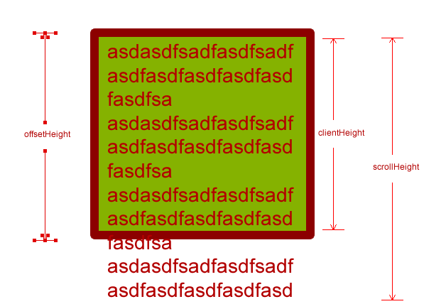

学习目标:
- 掌握API和Web API的概念
- 掌握常见的浏览器提供的API的调用方式
- 能通过API开发常见的页面交互功能
- 能够利用搜索引擎解决问题 typora-copy-images-to: WebAPI
Web API
Web API介绍
API的概念
API（Application Programming Interface,应用程序编程接口）是一些预先定义的函数，目的是提供应用程序与开发人员基于某软件或硬件得以访问一组例程的能力，而又无需访问源码，或理解内部工作机制的细节。
- 任何开发语言都有自己的API
- API的特征输入和输出(I/O)
- API的使用方法(console.log())
Web API的概念
浏览器提供的一套操作浏览器功能和页面元素的API(BOM和DOM)
此处的Web API特指浏览器提供的API(一组方法)，Web API在后面的课程中有其它含义
掌握常见的浏览器提供的API的调用方式
JavaScript的组成

ECMAScript - JavaScript的核心
定义了javascript的语法规范
JavaScript的核心，描述了语言的基本语法和数据类型，ECMAScript是一套标准，定义了一种语言的标准与具体实现无关
BOM - 浏览器对象模型
一套操作浏览器功能的API
通过BOM可以操作浏览器窗口，比如：弹出框、控制浏览器跳转、获取分辨率等
DOM - 文档对象模型
一套操作页面元素的API
DOM可以把HTML看做是文档树，通过DOM提供的API可以对树上的节点进行操作
术语：文档 document、节点 node、元素 element
DOM
DOM的概念
文档对象模型（Document Object Model，简称DOM），是W3C组织推荐的处理可扩展标志语言的标准编程接口。在网页上，组织页面（或文档）的对象被组织在一个树形结构中，用来表示文档中对象的标准模型就称为DOM。Document Object Model的历史可以追溯至1990年代后期微软与Netscape的“浏览器大战”，双方为了在JavaScript与JScript一决生死，于是大规模的赋予浏览器强大的功能。微软在网页技术上加入了不少专属事物，既有VBScript、ActiveX、以及微软自家的DHTML格式等，使不少网页使用非微软平台及浏览器无法正常显示。DOM即是当时蕴酿出来的杰作。
DOM又称为文档树模型

- 文档：document一个网页可以称为文档
- 节点：node网页中的所有内容都是节点（标签、属性、文本、注释等）
- 元素：element网页中的标签
- 属性：标签的属性
模拟文档树结构

function Element(option) {
this.id = option.id || '';
this.nodeName = option.nodeName || '';
this.nodeValue = option.nodeValue || '';
this.nodeType = 1;
this.children = option.children || [];
}
var doc = new Element({
nodeName: 'html'
});
var head = new Element({
nodeName: 'head'
});
var body = new Element({
nodeName: 'body'
})
doc.children.push(head);
doc.children.push(body);
var div = new Element({
nodeName: 'div',
nodeValue: 'haha',
});
var p = new Element({
nodeName: 'p',
nodeValue: '段落'
})
body.children.push(div);
body.children.push(p);
function getChildren(ele) {
for(var i = 0; i < ele.children.length; i++) {
var child = ele.children[i];
console.log(child.nodeName);
getChildren(child);
}
}
getChildren(doc);
DOM经常进行的操作
- 获取元素
- 动态创建元素
- 对元素进行操作(设置其属性或调用其方法)
- 事件(什么时机做相应的操作)
★获取页面元素
案例：
1.点击按钮弹出对话框 2.点击按钮修改超链接的地址和热点文字 3.点击(每个)图片弹出对话框 4.点击图片设置自身宽和高 5.点击按钮修改每个图片的title属性 6.点击按钮显示哈哈(排他功能) 7.点击按钮显示和隐藏div 8.显示和隐藏二维码 9.点击按钮修改所有p标签内容 10.点击按钮修改所有文本框内容 11.点击按钮切换图片 12.点击超链接停止跳转页面 13.点击小图显示大图 14.美女相册 15.点击按钮选中性别和兴趣
案例细节汇总 1、阻止a链接跳转，给a链接注册点击事件，并返回return false；
2、阻止a链接跳转在href中填写javascript(0);或者javascript:;
为什么要获取页面元素
例如：我们想要操作页面上的某部分(显示/隐藏，动画)，需要先获取到该部分对应的元素，才进行后续操作
console.dir()在哪打印元素的时候，会以对象的形式展示出来
根据id获取元素
var div = document.getElementById('main');
console.log(div);
// 获取到的数据类型 HTMLDivElement，对象都是有类型的
// HTMLDivElement <-- HTMLElement <-- Element <-- Node <-- EventTarget
getElementById 返回值：元素（对象）
注意：由于id名具有唯一性，部分浏览器支持直接使用id名访问元素，但不是标准方式，不推荐使用。
根据标签名获取元素
var divs = document.getElementsByTagName('div');
for (var i = 0; i < divs.length; i++) {
var div = divs[i];
console.log(div);
}
getElementsByTagName
tag : 标签
返回值 ：伪数组（不能使用数组的方法）
根据选择器获取元素
//获取单个元素，第一个
var text = document.querySelector('#text');
console.log(text);
//获取所有元素
var boxes = document.querySelectorAll('.box');
for (var i = 0; i < boxes.length; i++) {
var box = boxes[i];
console.log(box);
}
注意：只要是合法的选择器都可以使用，标签、类名、交集、并集等选择器
根据name获取元素(了解)
var inputs = document.getElementsByName('hobby');
for (var i = 0; i < inputs.length; i++) {
var input = inputs[i];
console.log(input);
}
根据类名获取元素(了解)
var mains = document.getElementsByClassName('main');
for (var i = 0; i < mains.length; i++) {
var main = mains[i];
console.log(main);
}
- 总结
掌握
getElementById()
getElementsByTagName()
了解
getElementsByName()
getElementsByClassName()
querySelector()
querySelectorAll()
document的常用属性
- document.body 获取身体
- document.head 获取头部
- document.title 获取标题
- document.documentElement 获取HTML
children与querySelectorAll 的区别
children 获取到元素的动态集合
querySelectorAll 获取的是静态集合
静态集合：元素集合会随着元素的增加而增加，减少而减少
动态集合：不会随着元素的变化而受到影响
事件
事件：触发-响应机制
Event接口表示在DOM中发生的任何事件，一些是用户生成的（例如鼠标或键盘事件），而其他由API生成。
事件类型
- click 点击事件
- dblclick 双击事件
- mouseover 鼠标经过事件
- mouseout 鼠标离开事件
- mousemove 鼠标移动
- mousedown 鼠标按下
- mouseup 鼠标抬起
- focus 获取焦点
- blur 失去焦点
- keydown 键盘按下
- keyup 键盘弹起
- scroll 滚动事件
事件三要素
- 事件源:触发(被)事件的元素
- 事件类型:事件的触发方式(例如鼠标点击或键盘点击)
- 事件处理程序:事件触发后要执行的代码(函数形式)
事件的基本使用
var box = document.getElementById('box');
box.onclick = function() {
console.log('代码会在box被点击后执行');
};
案例
- 点击按钮弹出提示框
- 点击按钮修改元素的样式
属性操作
非表单元素的属性
href、title、id、src、className
var link = document.getElementById('link');
console.log(link.href);
console.log(link.title);
var pic = document.getElementById('pic');
console.log(pic.src);
案例：
点击按钮，切换img标签里的图片
点击按钮显示隐藏div
类名操作
className
修改标签的className属性相当于直接修改标签的类名
var box = document.getElementById('box');
box.className = 'clearfix';
注意：标签中的class在JS中表示关键字，在JS中使用className来表示类名
innerHTML和innerText
innerText：
- 只能获取 纯文本
- 不可以识别标签，会对标签进行转义
建议使用innerText，从安全考虑
innerHTML：
- 可以获取到 标签 + 内容
- 可以识别标签
var box = document.getElementById('box');
box.innerHTML = '新内容<p>新标签</p>';
innerText和innerHTML设置内容时，都会把原来的内容覆盖掉
注意：表单元素的值都是通过value获取的
input用value，button用innerText
HTML转义符
" "
‘ '
& &
< < //less than 小于
> > // greater than 大于
空格
© ©
innerHTML和innerText的区别
innerText的兼容性处理
表单元素属性
value 用于大部分表单元素的内容获取(option除外)
type 可以获取input标签的类型(输入框或复选框等)
disabled 禁用属性
checked 复选框选中属性
selected 下拉菜单选中属性
disabled、checked、selected 都是布尔类型
以上这些属性不需要写属性值
xx.disabled = true;
案例
- 给文本框赋值，获取文本框的值
- 点击按钮禁用文本框
- 搜索文本框
- 检测用户名是否是3-6位，密码是否是6-8位，如果不满足要求高亮显示文本框
- 设置下拉框中的选中项
- 全选反选
自定义属性操作
xx.getAttribute(“name”) 获取标签行内属性
xx.setAttribute(“name”，“value”) 设置标签行内属性
xx.removeAttribute(“name”) 移除标签行内属性
自定义属性的作用：用于存储数据
注意：以上方法操作类名填写class，上述三个方法用于获取任意的行内属性，可以操作固有属性也可以自定义属性。
style操作行内样式
使用style方式设置的样式显示在标签行内
var box = document.getElementById('box');
box.style.width = '100px';
box.style.height = '100px';
box.style.backgroundColor = 'red';
注意：
1、对于font-size、background-color等等需要使用驼峰式命名
2、通过样式属性设置宽高、位置的属性类型是字符串，需要加上px
2、无法获取其他样式的属性值
- 案例
- 开关灯
- 点击按钮变色
- 图片切换二维码案例
- 当前输入的文本框高亮显示
- 点击按钮改变div的大小和位置
- 列表隔行变色、高亮显示
- 京东商品展示
- tab选项卡切换
创建元素的方式
document.write()
（基本不用）
//创建元素，不需要添加
document.write('新设置的内容<p>标签也可以生成</p>');
注意：
document.write() 是直接将内容写入页面的内容流，但是文档流执行完毕，则会导致页面重绘
只能往页面用添加内容，无法给元素添加内容
innerHTML
（慎用）可以获取到 标签 + 内容
可以识别标签
var box =
//创建元素，不需要添加
document.getElementById('box');
box.innerHTML = '新内容<p>新标签</p>';
//创建多个a链接,使用字符串拼接耗费程序运行时间比较长
for （var i = 0;i<= 100;i++){
inner.innerHTML += '<a href="#">百度</a>'
}
//创建多个a链接,使用数组追加耗费程序运行时间较短
var arr = [];
for （var i = 0;i<= 100;i++){
arr.push('<a href="#">百度</a>') ;
inner.innerHTML(arr);
}
innerHTML存在覆盖问题
innerHTML创建多个元素效率更高（不要采用拼接字符串，采用数组的形式追加），结构稍微复杂。
document.createElement()
（常用）document.createElement（）方法创建由tagName指定的HTML元素。因为这些元素原先不存在，是根据我的的需求动态生成的，所以我们也称为动态创建元素节点。
var div =
//创建元素，需要添加
document.createElement('div');
//添加元素
document.body.appendChild(div);
createElement（）创建多个元素效率高，结构清晰
tagName：字符串标签名
性能问题
- innerHTML方法由于会对字符串进行解析，需要避免在循环内多次使用。
- 可以借助字符串或数组的方式进行替换，再设置给innerHTML
- 优化后与document.createElement性能相近
案例
- 动态创建列表，高亮显示
- 根据数据动态创建表格
- 模拟百度搜索文本框
★节点操作
父节点
父节点： parentNode 得到的是离元素最近的父级节点（亲爸爸），找不到返回null。
子节点
子节点 ：childNodes 得到的是所有的子级包括文本节点。是一个伪数组。
//获得所有子元素节点
for(var i=0;i<ul.childNodes.length;i++){
if(ul.childNodes[i].nodeType== 1){
//ul.childNodes[i]是元素节点
console.log(ul.childNodes[i]);
}
}
第一个子节点：firstChild
最后一个子节点：lastChild
子元素节点：children（非标准）被浏览器承认，获取所有子元素节点。
第一个元素节点：firstElementChild
最后一个元素节点：lastElementChild
注意：以上两种方法存在兼容性问题，IE9以上支持
解决方案：第一个元素：children[0],最后一个元素：children[xx.children.length-1]
兄弟节点
兄弟节点
下一个兄弟节点：nextSibling 包含元素节点或文本节点。
上一个兄弟节点：previousSibling 同上
兄弟元素节点
下一个兄弟元素节点：nextElementSibling
上一个兄弟元素节点：previousElementSibling
注意：以上两种方法存在兼容性问题，IE9以上支持
解决方案：封装兼容性函数
function getNextElementSibling(element){
var el = element;
while (el = el.nextSibling){
if (el.nodeType===1){
return el;
}
}
return null;
}
创建和添加元素节点
//创建节点：
document.createElement('tagName');
//添加节点 node是父级 child是子级
node.appendChild(child);
9
//指定元素前面添加节点
node.insertBefore(child，指定的元素);
node.appendChild(child) 方法也称之为追加节点
node.insertBefore(child，指定的元素）方法在某个指定元素前面添加节点
注意：insertBefore的第二个元素写null或undefined结果和node.appendChild(child)一样都是在节点最后面
总结：页面添加一个新的元素
1、创建元素 2、添加元素
节点的删除
//父元素.removeChild(子节点);
parent.removeChild(ul.childen[0]);
注意：删除的是父节点中某一个子节点
节点的复制
//node.cloneNode();
//复制的是ul的第一个li
var lili = ul.children[0].cloneNode(deep);
//添加复制的节点
ul.appendChild(lili);
返回值：在内存中克隆节点
作用：返回值是克隆后的节点
注意：
如果复制括号里的参数为空或者false，则是浅拷贝，即只拷贝节点本身，没有拷贝里面的内容，括号里为true，为深拷贝，拷贝其中的内容。
如果克隆出来的节点带id值需要修改掉
- 克隆出来的节点没有添加，页面中不显示，只在内存中
总结：
var body = document.body;
var div = document.createElement('div');
body.appendChild(div);
var firstEle = body.children[0];
body.insertBefore(div,firstEle);
body.removeChild(firstEle);
var text = document.createElement('p');
body.replaceChild(text, div);
案例：
权限选择
节点层级
重点讲父子属性，兄弟属性画图讲解
var box = document.getElementById('box');
console.log(box.parentNode);
console.log(box.childNodes);
console.log(box.children);
console.log(box.nextSibling);
console.log(box.previousSibling);
console.log(box.firstChild);
console.log(box.lastChild);
注意
childNodes和children的区别，childNodes获取的是子节点，children获取的是子元素
nextSibling和previousSibling获取的是节点，获取元素对应的属性是nextElementSibling和previousElementSibling获取的是元素
nextElementSibling和previousElementSibling有兼容性问题，IE9以后才支持
总结
节点操作，方法
appendChild()
insertBefore()
removeChild()
replaceChild()
节点层次，属性
parentNode
childNodes
children
nextSibling/previousSibling
firstChild/lastChild
事件详解
注册事件
传统注册事件：
语法：事件源.on+事件名 = function（）{}；
onclick 当点击的时候
特点：注册事件的唯一性，同一个元素同一一个事件只能设置一个处理函数，最后注册的事件将会覆盖前面注册的处理函数
方法监听注册事件：
语法：事件源.addEventListener(type, listener，[useCapture])
divs[1].addEventListener('click',fn)//里面的fn
注意：
type：事件类型是字符串，而且不带on
listener：事件处理函数，事件发生时，会调用函数，如果事件需要移除，不要使用幂名函数
userCapture：可选参数，是布尔类型，默认值false。默认是事件冒泡，false是事件捕获。
特点：同一个元素同一个事件可以注册多个监听器，按注册顺序依次执行
attachEvent 事件监听方式(了解)
eventTarget.attachEvent(eventNameWithOn, callback)
eventTarget.attachEvent()方法将指定的监听器注册到eventTarget(目标上)，当该对象触发指定事件时，指定的回调函数就会执行。
移除事件使用：detachEvent( type, fn)
eventNameWithOn：事件类型字符串，需要带on
callback：事件处理函数，当目标触发时回调函数被调用
注意：该功能是IE9之前的浏览器，现在基本不用
兼容性函数：
移除事件
1、传统方法
divs[0].onclick = null;
2、removeEventListener
//声明有名函数
function fn(){...}
//移除事件
document.removeEventListener(type,fn)
type：事件类型是字符串，而且不带on
fn：事件处理函数，事件发生时，会调用函数，不要使用幂名函数
注意：fn不要使用幂名函数，幂名函数注册事件是无法解绑的
3、detachEvent( type, fn)
用于解绑attachEvent事件，不要使用幂名函数
兼容代码
function addEventListener(element, type, fn) {
if (element.addEventListener) {
element.addEventListener(type, fn, false);
} else if (element.attachEvent){
element.attachEvent('on' + type,fn);
} else {
element['on'+type] = fn;
}
}
function removeEventListener(element, type, fn) {
if (element.removeEventListener) {
element.removeEventListener(type, fn, false);
} else if (element.detachEvent) {
element.detachEvent('on' + type, fn);
} else {
element['on'+type] = null;
}
}
事件流
事件冒泡
事件冒泡：一个元素的事件触发了，该事件会在该元素的所有祖先元素依次触发
IE浏览器
事件捕获
事件捕获：从外面传播到里面
火狐浏览器
注意：使用事件冒泡还是事件捕获，在事件注册addEventListener的第三个参数useCapture决定
事件的三个阶段
- 捕获阶段
- 当前目标阶段
- 冒泡阶段
事件对象.eventPhase属性可以查看事件触发时所处的阶段
阻止事件传播的方式
- 标准方式 event.stopPropagation();
- IE低版本 event.cancelBubble = true; 标准中已废弃
阻止浏览器的默认行为:
e.preventDefault();
return false；无法阻止ddEventListener注册的事件
注意：href=javascript:void(0); 只能用于a链接
事件对象的属性和方法
事件对象：当事件触发的时候，会产生一个对象，对象里面就有和事件相关的信息
获取事件对象：在事件处理函数中添加形参e即可，这个形参e代表着事件对象
document.onclick = function(e){
//形参e代表事件对象
console.log(e);
}
- event.type 获取事件类型 鼠标事件对象属性
- clientX/clientY 所有浏览器都支持，获取鼠标相对于窗口(可视区域)位置
- pageX/pageY IE8以前不支持，获取鼠标相对于页面位置
- screenX/screenY 获取鼠标相对于屏幕的位置 键盘事件对象属性
- keyCode 键盘码 其他事件对象属性
- event.target || event.srcElement 用于获取触发事件的元素
- event.preventDefault() 取消默认行为
案例
- 跟着鼠标飞的天使
- 鼠标点哪图片飞到哪里
- 获取鼠标在div内的坐标
BOM
BOM的概念
BOM(Browser Object Model) 是指浏览器对象模型，浏览器对象模型提供了独立于内容的、可以与浏览器窗口进行互动的对象结构。BOM由多个对象组成，其中代表浏览器窗口的Window对象是BOM的顶层对象，其他对象都是该对象的子对象。
我们在浏览器中的一些操作都可以使用BOM的方式进行编程处理，
比如：刷新浏览器、后退、前进、在浏览器中输入URL等
BOM的顶级对象window
window是浏览器的顶级对象，当调用window下的属性和方法时，可以省略window 注意：window下一个特殊的属性 window.name
对话框
- alert()
- prompt()
- confirm()
页面加载事件
- onload
window.onload = function () {
// 当页面加载完成执行
// 当页面完全加载所有内容（包括图像、脚本文件、CSS 文件等）执行
}
window.addEventListener("load",function(){});
window.onload传统注册方式只能书写一次，如果多次后面的会覆盖前面的
- DOMContentLoaded
document.addEventListener('DOMContentLoaded',function(){});
DOMContentLoaded事件触发时。仅当DOM加载完成，不包括样式表，图片，flash等等
IE9以上才支持
如果图数量很多，用onload触发可能需要很长时间，交互效果就不能实现，此时使用DOMContentLoaded事件比较合适。
- onunload
window.onunload = function () {
// 当用户退出页面时执行
}
调整窗口事件
- onresize
window.onresize = function(){}
//
window.addEventListener('resize',function(){})
window.onresize是调整窗口大小的加载事件，当触发时就调用处理函数
从前经常用于响应式布局。window.innerWidth当前屏幕宽度，window.innerHeight当前屏幕高度。
注意：只要窗口大小像素出现变化，就会执行处理函数
延时器
setTimeout()和clearTimeout()
在指定的毫秒数到达之后执行指定的函数，只执行一次
// 创建一个定时器，1000毫秒后执行，返回定时器的标示id
//返回值延时器的id，纯数学，是不会重复的
var timerId = setTimeout(function () {}, 1000);
// 取消定时器的执行
clearTimeout(timerId);
注意：
window在调用时可以省略
延迟时间单位毫秒，但是可以省略
setTimeout()这个调用函数我们也称为回调函数callback，普通函数是按照代码循序直接调用。
而这个函数，需要等待时间，时间到了才去调用这个函数，因此称之为回调函数。
定时器
setInterval()和clearInterval()
定时调用的函数，可以按照给定的时间(单位毫秒)周期调用函数。
setInterval()方法重复调用一个函数，每隔这个时间，就去调用一次函数，循环调用。
// 创建一个定时器，每隔1秒调用一次
var timerId = setInterval(function () {
var date = new Date();
console.log(date.toLocaleTimeString());
}, 1000);
// 取消定时器的执行
clearInterval(timerId);
location对象
location对象是window对象下的一个属性，时候的时候可以省略window对象
href属性
location.href可以获取浏览器地址栏的URL
设置location.href = "地址"，就是让页面跳转
注意：location.href = ""可以刷新页面
reload方法
location.reload();刷新网页
URL
统一资源定位符 (Uniform Resource Locator, URL)
- URL的组成
scheme://host:port/path?query#fragment
scheme:通信协议
常用的http,ftp,maito等
host:主机
服务器(计算机)域名系统 (DNS) 主机名或 IP 地址。
port:端口号
整数，可选，省略时使用方案的默认端口，如http的默认端口为80。
path:路径
由零或多个'/'符号隔开的字符串，一般用来表示主机上的一个目录或文件地址。
query:查询
可选，用于给动态网页传递参数，可有多个参数，用'&'符号隔开，每个参数的名和值用'='符号隔开。例如：name=zs
fragment:信息片断
字符串，锚点.
location有哪些成员？
使用chrome的控制台查看
查MDN
成员
- assign()/reload()/replace()
- hash/host/hostname/search/href……
案例
解析URL中的query，并返回对象的形式
function getQuery(queryStr) {
var query = {};
if (queryStr.indexOf('?') > -1) {
var index = queryStr.indexOf('?');
queryStr = queryStr.substr(index + 1);
var array = queryStr.split('&');
for (var i = 0; i < array.length; i++) {
var tmpArr = array[i].split('=');
if (tmpArr.length === 2) {
query[tmpArr[0]] = tmpArr[1];
}
}
}
return query;
}
console.log(getQuery(location.search));
console.log(getQuery(location.href));
history对象
对应浏览器历史记录
back() 前进一个历史记录
forward() 前进一个历史记录
go(num) 指定这个历史记录， 负后退 、正前进
注意：go(0) 可以用来刷新页面
navigator对象
- userAgent
通过navigator.userAgent可以判断用户浏览器的类型
- platform
通过navigator.platform可以判断浏览器所在的系统平台类型.
动画函数封装
动画初体验-实现div到left=400的位置
点击按钮，让div能够移动到400的位置，到达终点，清除定时器
动画 初体验-让div做多个动画
点击按钮1，让div能够移动到400的位置，到达终点，清除定时器
点击按钮2，让div能够移动到800的位置，到达终点，清除定时器
还要让div能够从800 移动到400的位置，到达终点，清除定时器
动画初体验-div到达终点
让div移动到96px的位置，发现元素不能移动到终点位置
动画初体验-清除多个定时器
点击元素多次，会发现元素会左右来回移动，到达不了终点。
短路运算
&&：短路与， 只要碰到了false，就会短路，短路后不会执行第二个表达式。返回假值本体，如果都为true，返回最后一个值的本体
||：短路或，只要碰到了true就会短路，短路后不会执行第二个表达式。返回真值本体，如果都为false，返回最后一个值的本体
使用场景
- 用于兼容性处理
- 用于给函数的参数设置默认值
//函数的参数设置默认值
function sum(n){
n = n||10;
consloe.log(n+10);
}
sum(30);
注意：&&和||的结果不一定是布尔类型，也可以是其他的类型
||经常用来给函数设置默认值
轮播图
简单轮播图
1. 结构分析
2. 移动图片：渐渐的移动图片，用到animate函数
左右焦点图
1.结构分析
2.左右箭头的显示与隐藏(var count =0 )计数
3.点击左箭头与右箭头（下标判断）
无缝轮播图
1. 需要添加假图片
2. 真图片与假图片之间互相切换。
3. 把左边的的第一张视为假图，瞬时切换到最后的假图片，注意重置count
4. 按钮高亮以及排他
完整版轮播图
1. js动态添加小圆点
2. js动态添加最后一张假图片
3. 实现左右焦点图 + 无缝滚动
4. 自动播放
5. 点击小圆点同步切换
6. 解决点击小圆点的bug
注意：使用轮播图插件 Swiper插件www.swiper.com.cn swiper中文网
特效（三大家族）
偏移量（offset系列）
- offsetParent用于获取定位的父级元素
- offsetParent和parentNode的区别
var box = document.getElementById('box');
console.log(box.offsetParent);
console.log(box.offsetLeft);
console.log(box.offsetTop);
console.log(box.offsetWidth);
console.log(box.offsetHeight);
- offsetWidth和offsetHeight
获取元素的真实的宽高大小
注意：属性值无法设置，只能获取；如果需要设置元素宽高大小使用style行内样式。
- offsetParent
获取的是距离元素最近的有定位的父节点，如果找不到，找body。
- offsetLeft和offsetTop
获取元素到最近的有定位的父节点的距离，就是获取元素到offsetparent之间的距离。
注意：属性值无法设置，只能获取；如果需要设置元素宽高大小使用style行内样式。

滚动偏移（scroll系列）
var box = document.getElementById('box');
//内容区域宽高大小
console.log(box.scrollWidth)
console.log(box.scrollHeight)
//滚动条窗口，以外的大小
console.log(box.scrollLeft)
console.log(box.scrollTop)
//滚动事件
box.onscroll =function(){
console.log(box.scrollTop);
}

★获取页面的滚动距离
//获取页面的滚动距离：
//老版本：兼容性通过HTML或者body的scrollTop
console.log(document.documentElement.scrollTop||document.body.scrollTop)
//现代浏览器 window.pageYOffset
console.log(window.pageYOffset||document.documentElement.scrollTop||document.body.scrollTop)
//推荐使用window注册滚动事件，兼容性更好
window.onscroll = function(){
console.log(window.pageYOffset||document.documentElement.scrollTop||document.body.scrollTop)
}
客户区大小（client系列）
client家族用于获取盒子可视区的大小
client家族有clientWidth、clientHeight、clientLeft、clientTop
clietnWidth: 获取内容和padding的大小
clientHeight:获取内容与padding的大小
clientTop与clientLeft
clientTop与clientLeft 完全没有用，他们就是borderTop与borderLeft
var box = document.getElementById('box');
console.log(box.clientLeft);
console.log(box.clientTop);
console.log(box.clientWidth);
console.log(box.clientHeight);

★获取页面可视区域的大小
//获取页面的滚动距离：
//老版本：兼容性通过HTML或者body的clietnWidth/clientHeight
console.log(document.documentElement.sclientHeight||document.body.clientHeight)
//现代浏览器 window.innerWidth/innerHeight
console.log(window.innerHeight||document.documentElement.sclientHeight||document.body.clientHeight)
//onresize:当窗口发生改变时触发
window.onresize =function(){
window.innerHeight;
}
onresize事件：onresize事件会在窗口被调整大小的时候发生。
window.onresize = function(){
//事件处理程序
var width = window.innerWidth;
var height = window.innerHeight
}
三大家族对比

案例
- 匀速动画函数
- 变速动画函数
- 回到顶部
- 无缝轮播图
- 模拟滚动条
- 拖拽案例
- 放大镜案例
移动端
类名操作
推荐：classList是一个集合，会存储某个元素上所有的类名，使用classList来替代className操作class类（HTML5提供的）
//添加类
node.classList.add("classname");
//移除类
node.classList.remove("classname");
//切换类，如果有该类名就移除，没有就添加
node.classList.toggle("classname");
//判断类，判断元素是否包含指定的类名，返回布尔类型的值
node.classList.contains("classname");
注意：classlist不会覆盖原有类名，而className存在类名覆盖问题。
【tab栏案例】
元素上有效的样式
获取不是行内样式的属性值
window.getComputerStyle(element,null);
返回值：是个对象，对象里面有元素所有计算后的样式
touch事件
移动端新增了4个与手指触摸相关的事件。
//touchstart:手指放到屏幕上时触发
//touchmove:手指在屏幕上滑动式触发（会触发多次）
//touchend:手指离开屏幕时触发
//touchcancel:系统取消touch事件的时候触发,比如电话
注意：移动端建议使用 事件源.addEventListener创建事件
touch对象的属性
每个触摸事件被触发后，会生成一个event对象，event对象中changedTouches会记录手指滑动的信息。
e.touches;//当前屏幕上的手指
e.targetTouches;//当前dom元素上的手指。
e.changedTouches;//触摸时发生改变的手指。(重点)
//以上都是伪数组，以下都是伪数组元素的属性值
这些列表里的每次触摸由touch对象组成，touch对象里包含着触摸信息，主要属性如下
clientX / clientY: //触摸点相对浏览器窗口的位置
pageX / pageY: //触摸点相对于页面的位置
获取手指的信息
e.touches[0].pageX
区域滚动与iscroll
使用 Iscroll插件，实现区域滚动
附录
元素的类型